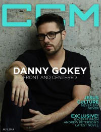

CCM Digital
1 Jul 2014
| Cover |
|---|
|  |
 Online Exclusively Online Exclusively |
| Writers in this Issue |
| Andy Argyrakis Grace S. Aspinwall Mark Batterson Matt Conner Andrew Greer Caroline Lusk |
Danny Gokey
Cover Feature:- "Front & Centered" by Matt Conner
- "Kingdom Come"
- "Jesus: a Culture of Possibilities" by Caroline Lusk
- "Hope Through Hip-Hop" by Andrew Greer
- "Not Lost in Translation" by Matt Conner
- "The Aussies Leave America Breathless" by Andy Argyrakis
- "Making It Through" by Caroline Lusk
- Sandi Patty - Everlasting by Andy Argyrakis
- Danny Gokey - Hope in Front of Me by Grace S. Aspinwall
- Jesus Culture - Unstoppable Love by Grace S. Aspinwall
- Guy Penrod - Worship by Andrew Greer
- New Empire - In A Breath by Matt Conner
- About a Mile - About a Mile by Matt Conner
- Randall Goodgame - Sing the Bible with Slugs and Bugs by Matt Conner
- The Remission Flow - Rhythms of Grace by Matt Conner
- Tedashii - Below Paradise by Matt Conner
- Beverly "Bam" Crawford - Thank You For All You've Done by Andrew Greer
- Dolly Parton - Blue Smoke by Andy Argyrakis
- The Fray - Helios by Andy Argyrakis
- "The Only Name Tour, Grace Christian Academy, Kankakee, IL" by Andy Argyrakis
- "Fallback Position" by Mark Batterson
- "Take It All Away" by Caroline Lusk
© 2011 CMnexus. Last updated August 2025. Contact: editor -AT- cmnexus -DØT- org